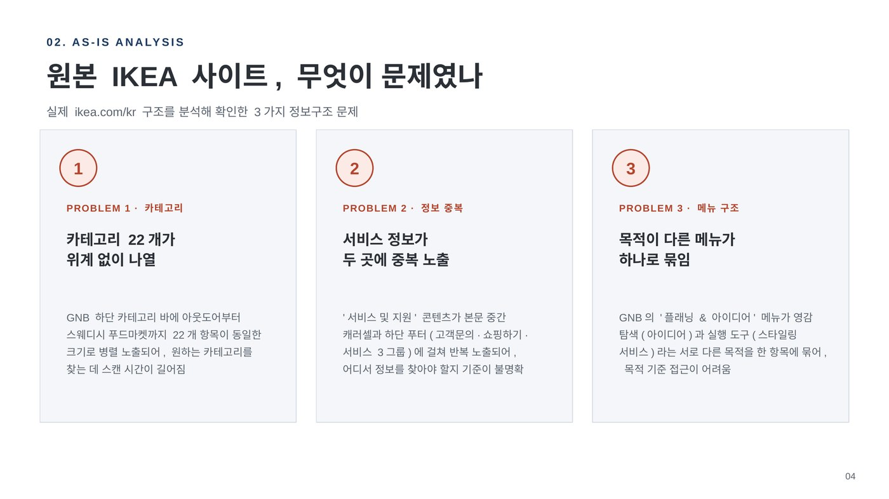
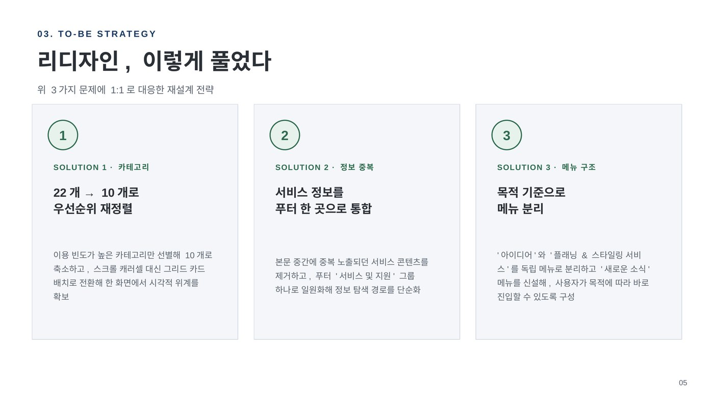
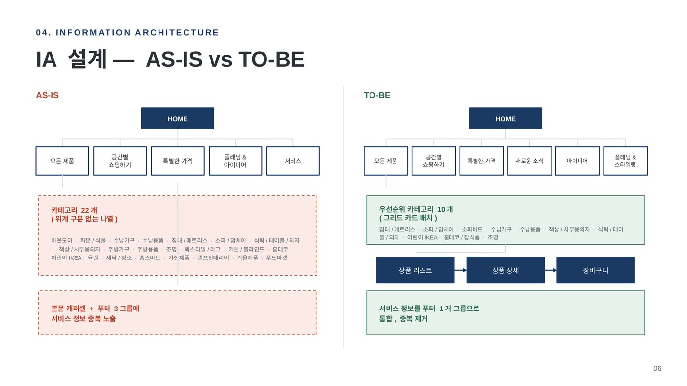
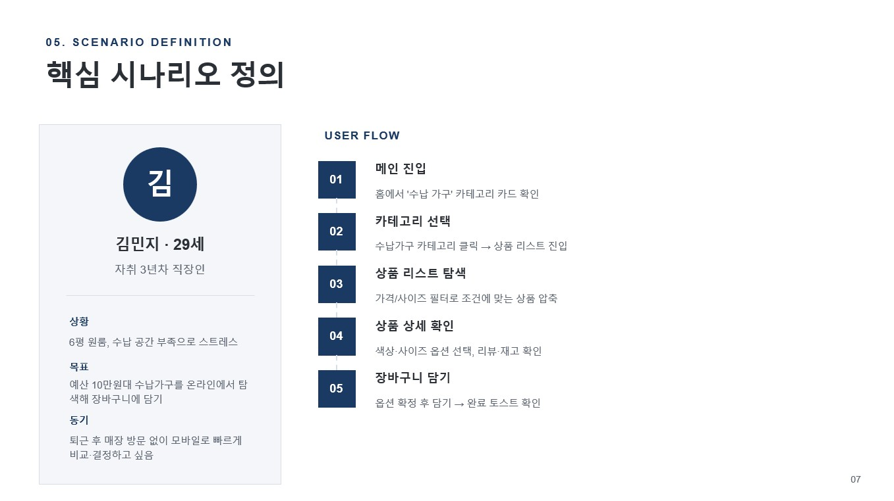
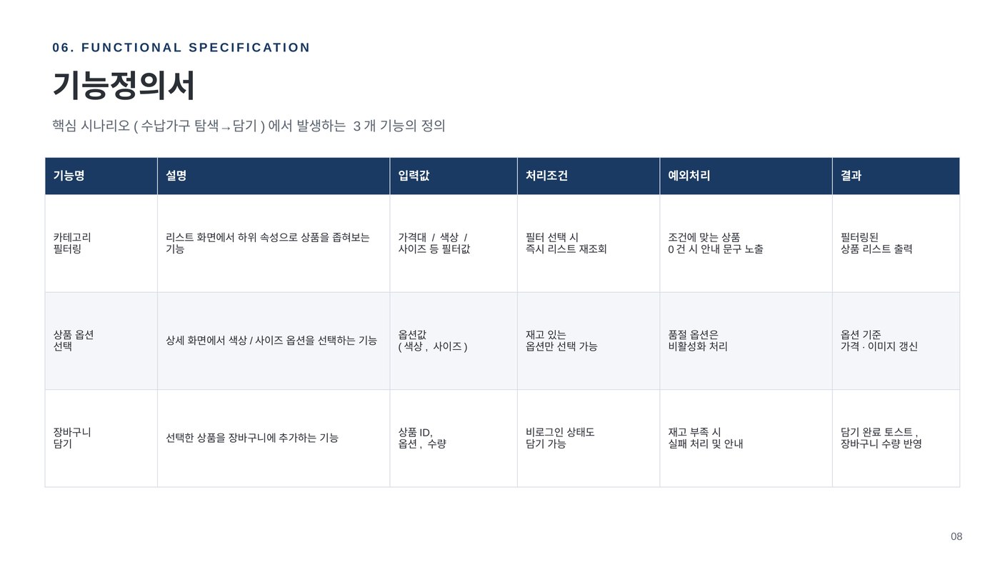
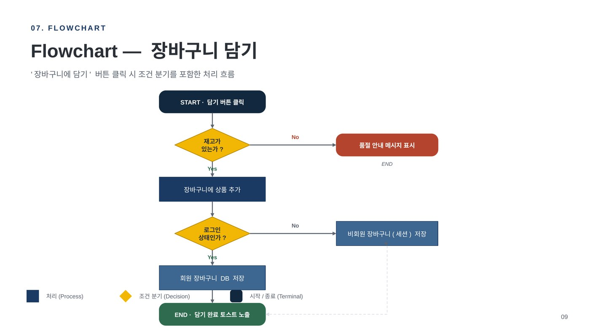
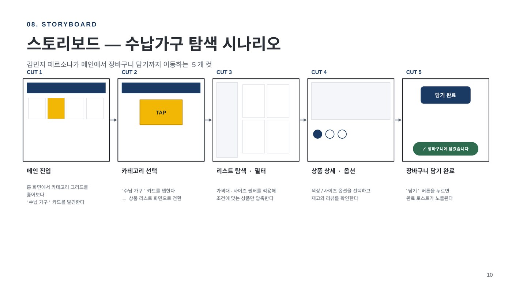
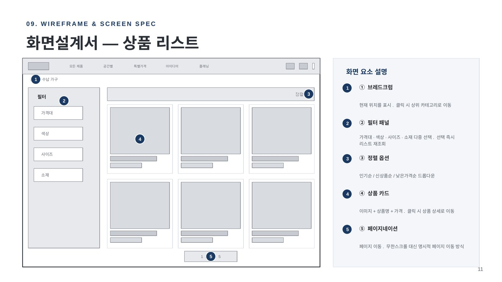
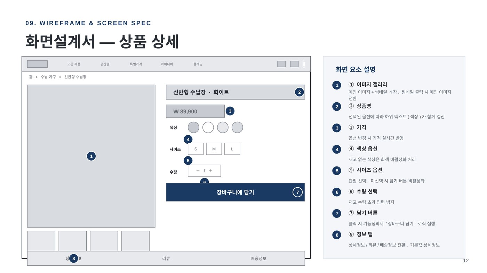
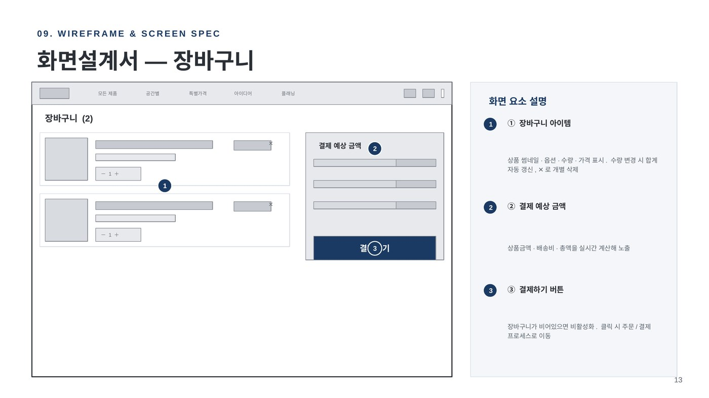

BACKGROUND
실제 IKEA 코리아 웹사이트의 정보구조를 분석하고, 사용자 중심 관점에서 재설계
실제 ikea.com/kr 구조를 분석해 정보구조 문제 3가지 도출
IA 재설계부터 기능정의서, Flowchart, 스토리보드, 화면설계서
실제 ikea.com/kr을 직접 분석해 3가지 정보구조 문제를 확인했습니다. 카테고리 22개가 위계 없이 나열되어 스캔 시간이 길어지고, 서비스 정보가 본문과 푸터에 중복 노출되며, 목적이 다른 메뉴(아이디어·플래닝)가 하나로 묶여 있었습니다.

위 3가지 문제에 1:1로 대응하는 전략을 세웠습니다. 카테고리를 22개에서 10개로 압축해 그리드 카드로 재배치하고, 중복되던 서비스 정보를 푸터 한 곳으로 통합했으며, 목적이 다른 메뉴를 독립 항목으로 분리했습니다.

GNB 구조와 카테고리 위계를 사이트맵 형태로 시각화해 AS-IS와 TO-BE를 나란히 비교했습니다. 우선순위 카테고리 10개로 압축한 구조가 상품 리스트 → 상세 → 장바구니로 이어지는 흐름과 어떻게 연결되는지 함께 보여줍니다.

이후 기능정의서·Flowchart·스토리보드·화면설계서 전체를 관통하는 단일 시나리오를 페르소나 기반으로 정의했습니다. 메인 진입 → 카테고리 선택 → 리스트 탐색 → 상세 확인 → 장바구니 담기, 5단계 User Flow입니다.

카테고리 필터링, 상품 옵션 선택, 장바구니 담기 3개 기능을 입력값·처리조건·예외처리·결과 단위로 명세했습니다. 화면을 그리기 전에 로직을 먼저 문서로 확정하는 단계입니다.

'담기' 버튼 클릭 시 재고 여부와 로그인 상태에 따라 갈라지는 조건 분기를 플로우차트로 설계했습니다. 품절 시 안내, 비로그인 시 세션 기반 장바구니 저장까지 예외 케이스를 포함합니다.

김민지 페르소나가 메인에서 장바구니 담기까지 이동하는 과정을 5컷으로 시각화했습니다. 각 컷마다 사용자의 행동과 화면 전환을 함께 표기했습니다.

스토리보드에서 정의한 화면 3개를 저해상도 와이어프레임으로 구체화하고, 각 요소마다 번호를 매겨 인터랙션을 설명하는 화면설계서 형태로 정리했습니다.


